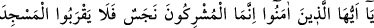
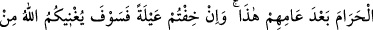
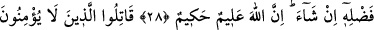
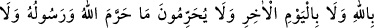
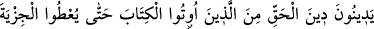
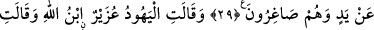
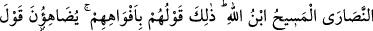
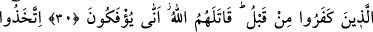
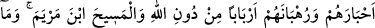
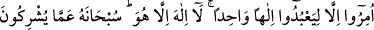
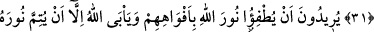
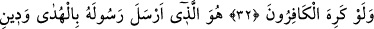
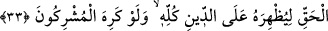
ALLAH NÛRUNU
TAMAMLAYACAKTIR
28. Ey îman edenler! Müşrikler ancak bir pisliktir, artık bu yıllarından sonra
Mescid-i Haram’a yaklaşmasınlar. Eğer yoksulluktan korkarsanız, (biliniz ki) Allah
dilerse yakında sizi kendi lütfundan zengin edecektir. Şüphesiz Allah iyi bilendir,
hikmet sahibidir.
29. Kendilerine kitap verilenlerden Allah’a ve âhiret gününe inanmayan, Allah’ın
ve Elçisi’nin haram kıldığını haram saymayan ve hak dini din edinmeyen kimselerle,
zillet içinde elleriyle cizye verinceye kadar savaşın.
30. Yahudiler: “Uzeyr, Allah’ın oğludur.” dediler. Hristiyanlar da: “Mesih,
Allah’ın oğludur.” dediler. Bu, onların ağızlarıyla geveledikleri sözleridir. (Bu
sözlerini), önceden inkar etmiş (olan müşrik)lerin sözlerine benzetiyorlar. Allah
onları kahretsin, nasıl da çevriliyorlar!?
31. (Yahudiler) Allah’ı bırakıp bilginlerini (hahamlarını), (Hristiyanlar ise)
rahiplerini ve Meryem oğlu Mesih’i rabler edindiler. Oysa kendilerine yalnız tek
ilâha ibadet etmeleri emredilmişti. O’ndan başka ilâh yoktur. O, onların ortak